チーム開発での工夫点
役割の明確化：Notionのタスクボードで担当者と進行状況を共有しました。
アイデア共有：匿名で書き込める掲示板を作り、気軽に案を追加できるようにしました。
ゴール共有：仕様書を使い、世界観・ルール・面白さの方向性をそろえました。
このポートフォリオは遊びながら作品を見ることができます。
テキストの上に散らばったブロックをクリックして掃除しながら読んでみましょう！
遊びモードをオンにしますか？
※ いつでもヘッダーの「遊びモード」ボタンから切り替えられます
ゲームプランナー志望 / クリエイティブデベロッパー
大阪大学基礎工学院システム創成専攻に所属しています。大学でゲーム制作を始め、ゲームの「ルール」と「面白さ」を考えることに魅力を感じ、ゲームプランナーを志望するようになりました。 企画だけでなく、色彩デザインやプログラミングにも取り組み、作品の体験を自分の手で形にする力を磨いています。 視野を広げるため、ゲーム分野に限らず、政治経済・教育・テクノロジー・スポーツなどの情報を新聞から収集し、 新しい趣味や関心を見つけることにも日々取り組んでいます。
画像を挿入するには src を変更してください
ゲームを制作する際に、「プレイヤーはどんな体験をしてどこに面白さを感じるか」を設定します。 そしてその条件を達成できるような雰囲気やルールを考えます。これにより制作の軸が定まり一貫性のあるゲームを制作できます。
右図は、実際に作成したゲームの仕様書です。 このゲームでは「直感的に理解できること」と「ギリギリ感を楽しめること」を方針に設定しました。 この方針に基づき、客の注文に対して正しいドーナツを渡すというルールを設計しました。 たとえば、注文内容は吹き出しUIで表示し、制限時間が近づくにつれ赤くなるようデザインしました。 プレイヤーが瞬時に状況を理解し、急いで正しい判断をしなければならない状況を作っています。 これにより、分かりやすさを保ちながら、短時間で判断する緊張感を視覚的に演出しました。
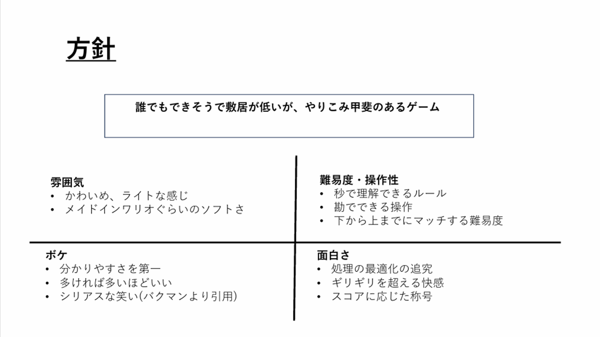
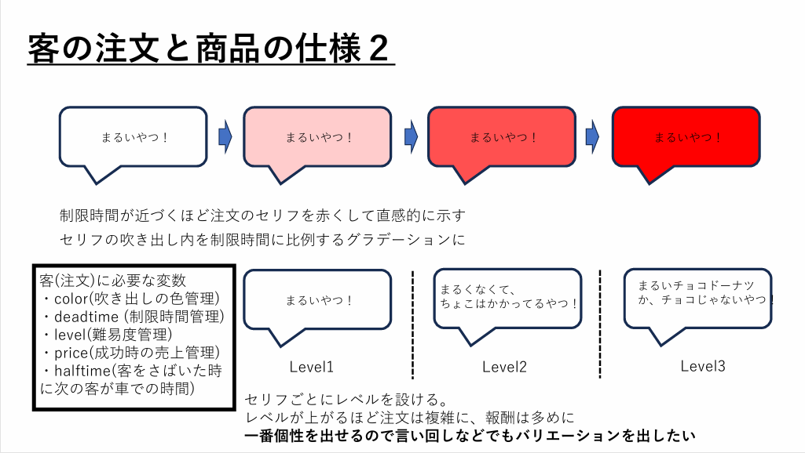
チーム開発では、各メンバーが自分の役割とチーム全体のゴールを把握できる状態を重視しました。 Notionでタスクボードを作成し、担当者・進行状況・優先度を共有することで、誰が何を進めているのかを明確にしました。
また、匿名で気軽にアイデアやネタを追加できる掲示板もNotion上に用意しました。 会議だけに頼らず、思いついた案を後から共有できるようにすることで、チーム内の発想を集めやすくしました。 さらに、仕様書を使ってゲーム全体の方向性を共有し、世界観・ルール・面白さの認識がずれないようにしました。
役割の明確化：Notionのタスクボードで担当者と進行状況を共有しました。
アイデア共有：匿名で書き込める掲示板を作り、気軽に案を追加できるようにしました。
ゴール共有：仕様書を使い、世界観・ルール・面白さの方向性をそろえました。
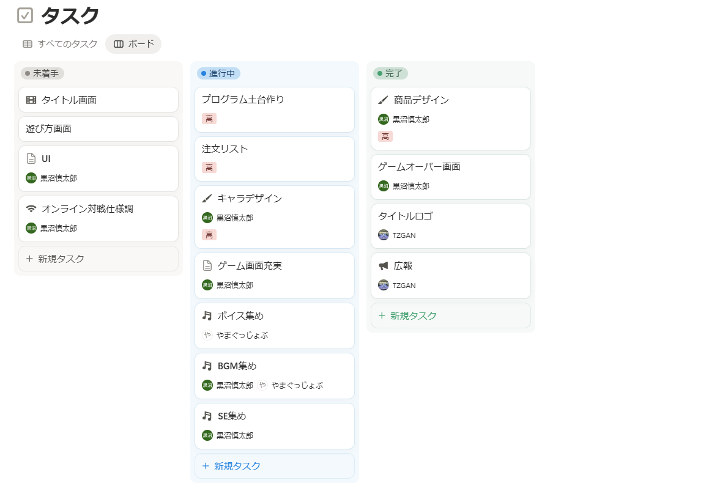
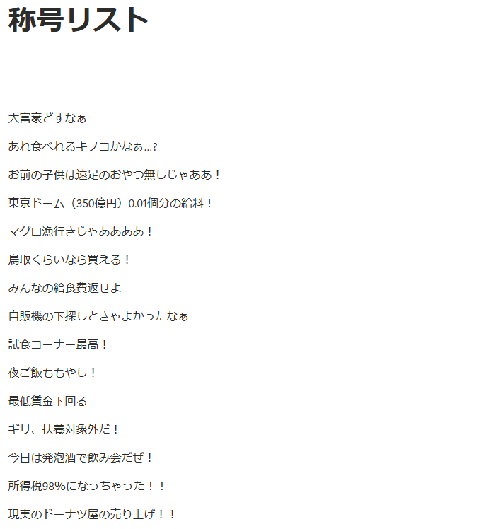
テストプレイや観察を通じて、プレイヤーがどこで迷い、どこで面白さを感じにくくなっているかを確認します。 感覚的な違和感をそのままにせず、原因を言語化して改善方針に落とし込みます。
右図には、改善前後の比較画像やテストプレイ時のメモを掲載する想定です。 課題を見つけ、仮説を立て、調整後にもう一度確認する流れを示すことで、改善のプロセスを伝えます。
既存のジャンルやルールをそのまま使うのではなく、別の視点や違和感を掛け合わせて新しい面白さを探します。 日常で見つけた発想や、他分野から得た情報を企画の切り口に変換することを意識しています。
右図には、アイデアメモや企画初期案、既存作品との差分を示す資料を掲載する想定です。 思いつきで終わらせず、どの要素を組み合わせると独自性になるのかを整理した過程を示します。
これまでの制作物
作品概要：上から降ってくるハムスターを避けながら神経衰弱を行うゲームです。カードの記憶と回避行動のどちらに集中するかという駆け引きを生み、かわいらしい雰囲気と手応えのあるゲーム性の両立を目指しました。

当時はゲーム制作だけでなく、プログラミングやデザインなど、ゲームを構成する多くの要素が未経験でした。完成度に粗が出る可能性があるなら、むしろその粗をユーモアに変えてしまおうと考えました。また、ルール設計も自分が実装できる範囲で成立させる必要があったため、プログラミングの教科書に題材として掲載されていた神経衰弱をアレンジすることにしました。このような思考過程を踏まえ、ゲーム設計の柱を「ユーモア」と「神経衰弱」に設定しました。
神経衰弱をどのようにアレンジするか考えるため、まずは通常の神経衰弱をプレイしました。すると、見た目の差異が少ないトランプを記憶するだけでは展開が単調になりやすいことに気づきました。 また、スコアが記憶力に大きく左右され、プレイヤーが戦術を考えたり工夫したりする余地が少ないことも課題だと感じました。そこで神経衰弱の課題を「単調」「記憶力でしか決まらない」「トランプが地味」と設定し、それらを解決する方向でアレンジしました。 誰にでもなじみがある神経衰弱をベースにするため、気軽に遊べるよう、ルールは複雑にしすぎないことを意識しました。そこで落ちものを避けながら神経衰弱をするという方向に決めました。 落ちものを避ける要素には、「単調」「記憶力でしか決まらない」という課題を解決できる「不規則性」と「アクション性」があり、当時の技術でも実装しやすいと考えたからです。 では、落ちものを何にするべきか。ここはもう一つの柱である「ユーモア」とセットで考えました。画面上部から降ってきたら面白いものは何か。大喜利のように考え続けた結果、このゲームの顔となる「ハムスター」が決まりました。 さらに、絵札もハムスターにすることで「トランプが地味」という課題を解決しました。絵札にはあえて似た写真を一部採用し、プレイヤーを迷わせることで神経衰弱としての面白さも残しました。 すべての絵札が簡単に見分けられると、プレイヤーは自然にカードの位置を覚えられてしまい、「自分の記憶が正しかった」という神経衰弱本来の快感が弱まると考えました。 一方で、すべてが紛らわしいと通常の神経衰弱と変わらなくなるため、区別しやすい写真も混ぜています。これにより、プレイヤーは分かりやすい絵札を先にそろえるといった戦術を組み立てられるようになりました。
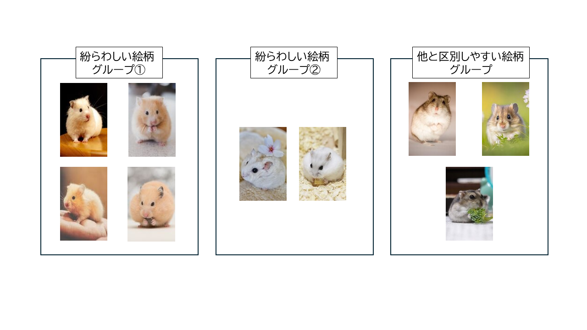
ハムスターが降ってくる。それを避けながら神経衰弱をする。基本ルールは実装できましたが、テストプレイをすると面白さと遊びやすさにまだ不足を感じました。 そこからは、プレイ中の違和感や不足している要素を見つけ、言語化し、改善することを繰り返しました。見た目のインパクトが弱いという課題には、落ちてくるハムスターの密度を上げ、速度を落とすことで難易度を変えずに解決しました。 HPを見る余裕がなく、いつの間にかゲームオーバーになってしまう問題には、HP表示を見やすい色に変更し、残りHPに応じた警告音を追加しました。ゲーム後半にカードが減って簡単になりすぎる問題には、後半ほどハムスターを加速させることで最後まで油断できない展開にしました。 さらに、音が少なく盛り上がりに欠けていたため、厳かなクラシック音楽と大げさなリアクション音声を採用しました。課題を発見して解決を重ねることでゲームの完成度が高まり、プレイヤーからも好評をいただきました。
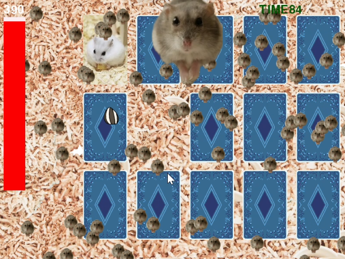
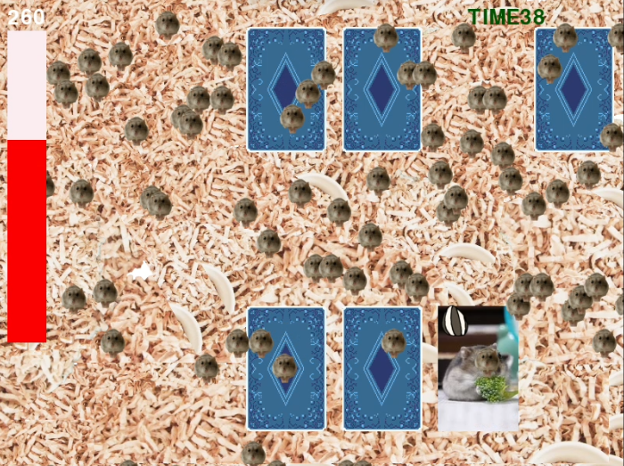
作品概要：告白のセリフに合わせて6つの選択肢から適切なヤジを選び、生卵をぶつけながら告白シーンを台無しにするゲームです。プレイヤーは、神聖な告白シーンをあえて崩していく背徳感と爽快感を体験できます。
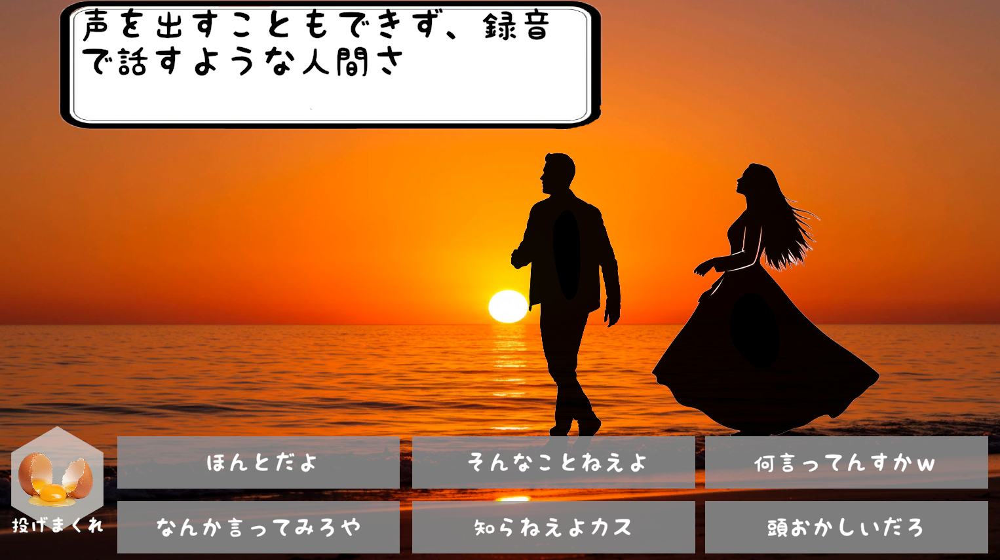
この作品は、大会テーマに沿ったゲームを一週間で制作し評価し合う「Unity1week」というゲームジャム用に制作しました。制作期間が一週間しかないため、最初の設計段階で完成形を明確にし、スピーディーに作る必要がありました。そこで今回は、題材を長く吟味するのではなく、決めた題材をどう面白くするかに集中しました。 大会のテーマは「ひく」でした。最初に思い浮かんだ言葉は「ドン引き」です。では、ドン引きさせたら面白い場面は何か。そう考えて浮かんだのが愛の告白でした。こうして、告白を邪魔して失敗させるゲームという大枠を決めました。
告白を邪魔して失敗させるという大枠が決まったところで、プレイヤーは具体的に何をしたくなるのかを考えました。 ただ考えるだけではアイデアが広がらなかったため、恋愛ゲームなどの告白シーンを改めて観察しました。すると、告白のセリフに対して思わずヤジを飛ばしたくなる自分に気づきました。 フィクションの告白なので当然ではありますが、セリフが詩的で大げさに見える瞬間があります。くだけた言い方をすれば「痛い」、あるいは「臭い」と感じる瞬間です。 その告白シーンにヤジを飛ばしたい衝動こそ、プレイヤーが求める体験なのではないか。そう考え、告白にヤジを入れて失敗させるという具体的なルールに落とし込みました。
次に、ヤジを飛ばす行為にどのようにゲーム性を持たせるかを考えました。ヤジを連打するだけでは駆け引きがなく、ゲームとしての面白さが弱いと感じたからです。 そこで、ヤジとはそもそも何かを振り返りました。聞いている側が恥ずかしくなるようなセリフに対して、「何を言っているんだ」と思わず反応したくなること。それがヤジの正体だと考えました。つまり、ヤジとはツッコミです。 その解釈をもとに、告白の文に対して正しいツッコミとしてのヤジを選び、スコアを伸ばすゲームに設計しました。 この設計であれば、面白さをクイズという形式で担保できます。また、ヤジを選ぶだけでは操作量が少なく退屈に感じられるため、告白の隙間時間に卵を投げる妨害要素も加えました。正しいヤジを考えながら卵も投げることで適度な忙しさを生み、クリア時に強い達成感を得られるようにしました。
作品概要：女の子とデートしながら、「インサイト」という特殊能力で心の中を覗き、本音を探るゲームです。本音を隠していそうな場面を察し、覗いた情報をもとに適切な言動を選ぶことで、女の子との距離を縮めていきます。
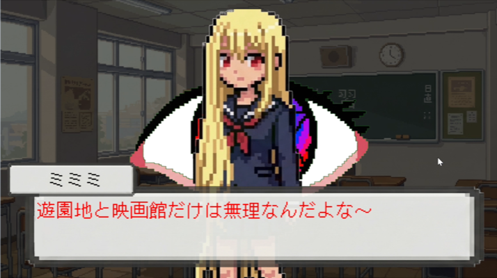
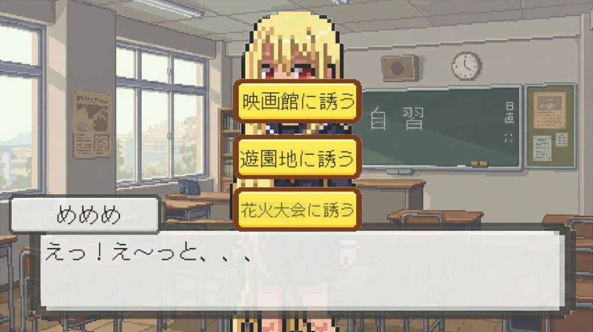
これまで手掛けてきたゲームはギャグ調のミニゲームが多く、雑味のあるイラストもギャグテイストと相性がよいものでした。
しかし、真剣な恋愛ゲームを作るにあたり、これまでのようなふざけた印象や不調和なデザインではプレイヤーが感情移入しにくいと考えたため、プレイヤーを邪魔しないデザインになるよう注力しました。
当時の自分には十分なイラスト制作技術がなかったため、ビジュアル制作にはAIを活用しました。ただし、プレイヤーがAIイラストだと強く認識すると違和感が残り、物語への没入を妨げると考えました。そこで課題を「AIっぽさからどう脱するか」と設定しました。AIっぽさとは画一的で見たことがあるものだと考えました。そこで、世に多くあるイラストの平均から大きく離れたビット風の画風にし、
キャラクターには片側の髪だけが極端に長いという大きな個性を持たせました。これらの工夫はAIっぽさを薄めるだけでなく、ビット風の画風はノスタルジックな演出の補助に、キャラクターの個性はプレイヤーを惹きつける要素になると考えました。
また、背景やキャラクターに原色を多く用いると、それぞれが独立して見えてしまったため、背景の彩度を抑え、キャラクターの色味とぶつからないように調整しました。UIもわずかに透過させることで、ゲーム画面から浮かないようにしています。
反対に、能力使用時にはプレイヤーにインパクトを与えたかったため、あえて彩度の強いエフェクトを使い、画面から浮かせる演出にしました。キャラクター・UI・背景の各要素でバランスを取り、ゲーム画面で浮かない・紛れないデザインになるよう調整しました。これらはAIが自動で整えてくれるものではないため、自分で色調補正を学び、既存のゲームも参考にしながら仕上げました。
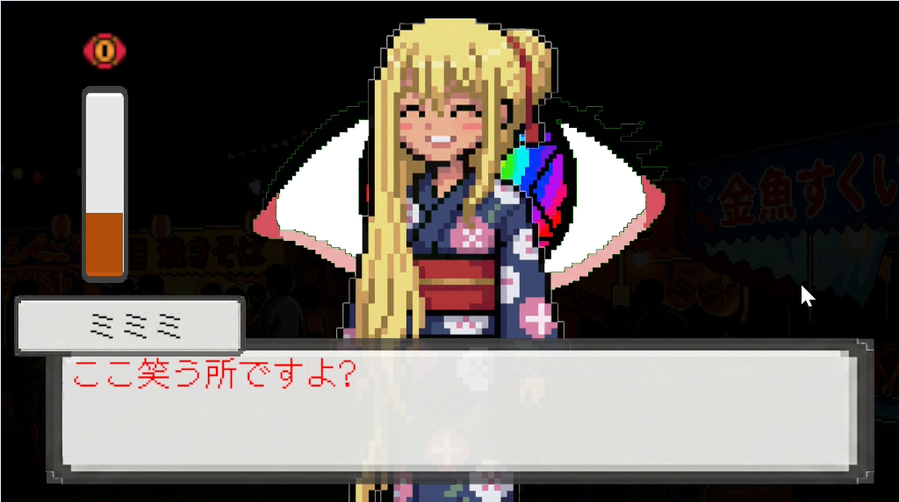
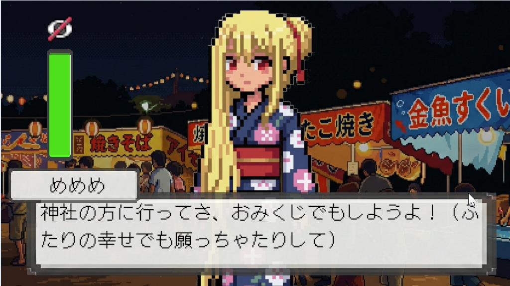
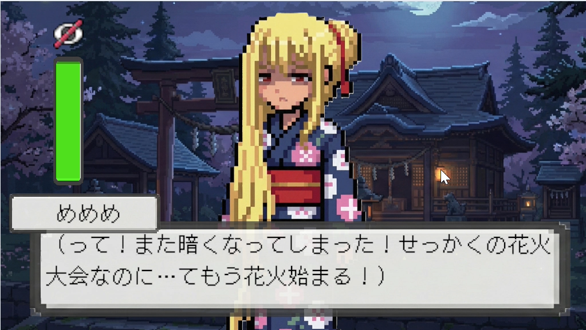
この作品も一週間で制作する必要があったため、まず題材を「能力を使って女の子の心の中を覗く恋愛ゲーム」と決めました。制作期間が短い以上、長いシナリオは作れません。だからこそ、5分程度でもプレイヤーを惹きつけるシナリオが必要でした。そこで課題を「短い物語でどう関心を持たせるか」「短い物語で恋愛成就に納得してもらえるか」「短い物語でどう驚かせるか」の3点に整理しました。 一つ目の課題に対しては、物語の導入をコメディチックにしてプレイヤーの関心を引き、途中からシリアスにすることで緩急をつけました。次に、「短時間で恋愛が成就する展開にどう納得してもらうか」については、プレイヤーから積極的にアプローチする展開にすることで解決を図りました。さらに、女の子の心の中を能力で覗き、望まれる言動を選ぶゲームシステムがあるため、短時間で恋愛が進展しても納得感を持たせられると考えました。 そして、実は「プレイヤーの心の中は女の子に覗かれていた」というエンドにしました。「自分の真剣な気持ちが初めから伝わっていた」という要素が、短いアプローチで付き合える納得感の補強にも、プレイヤーを驚かせる要素にもなると考え、シナリオに組み込みました。
その他の活動
活動の内容を記載します。参加したイベント、発表、ボランティアなど。
活動の内容を記載します。参加したイベント、発表、ボランティアなど。
活動の内容を記載します。参加したイベント、発表、ボランティアなど。
活動の内容を記載します。参加したイベント、発表、ボランティアなど。